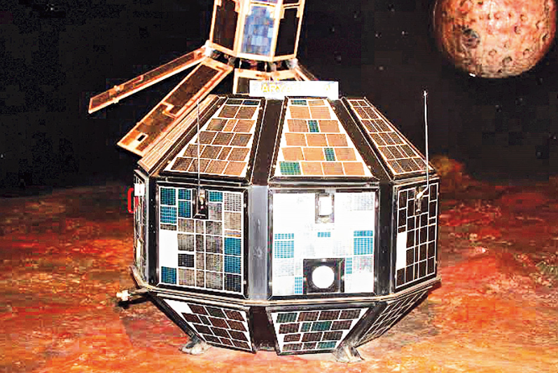
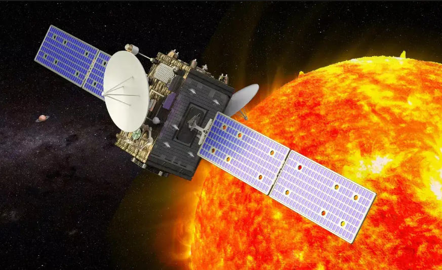
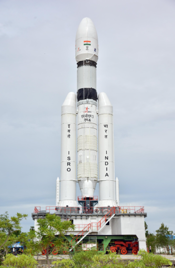
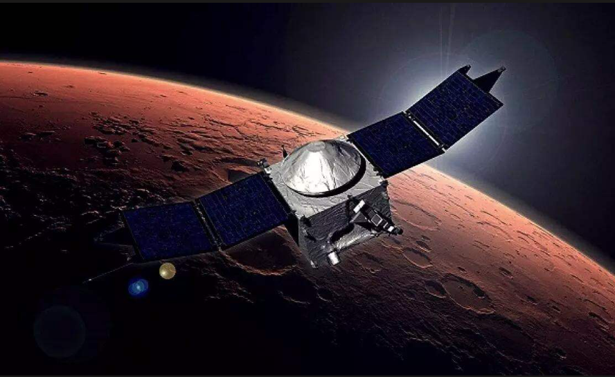
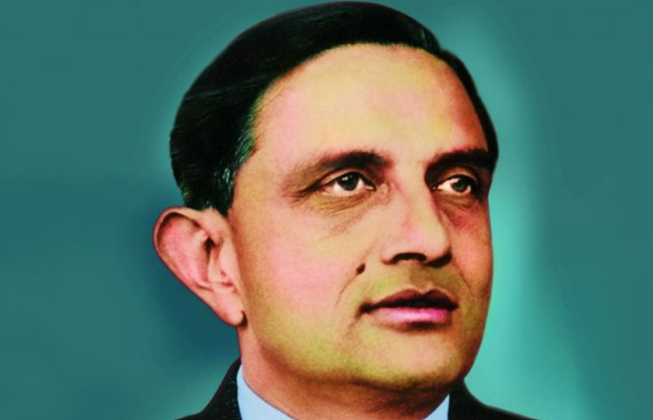

Jantar Mantar, Jaipur
Early 18th century
A monumental naked-eye observation site associated with Jai Singh II, featuring a remarkable collection of large fixed astronomical instruments.
From monumental naked-eye instruments to long-running solar archives and Himalayan observatories, explore how India has observed, measured, and interpreted the sky across centuries.
India's astronomical landscape spans monumental instruments, solar research archives, and high-altitude observatories built for modern optical astronomy.

Early 18th century
A monumental naked-eye observation site associated with Jai Singh II, featuring a remarkable collection of large fixed astronomical instruments.

Established 1899
One of India's most important solar observing centres, preserving a century-scale record of systematic observations of the Sun.

Modern astrophysics centre
The observatory site became a major base for optical astronomy in the Himalayan region and is part of the scientific legacy now continued by ARIES.
Choose a milestone to explore how observation, mathematics, instruments, and institutions shaped India's relationship with the sky.
Aryabhata's mathematical-astronomical work became one of the foundational landmarks in the history of Indian astronomy, bringing together computational methods and models for describing celestial motions.
Open any image to view it in a larger gallery preview.

